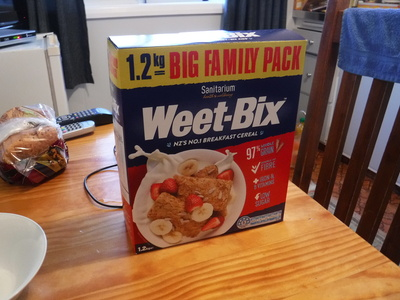
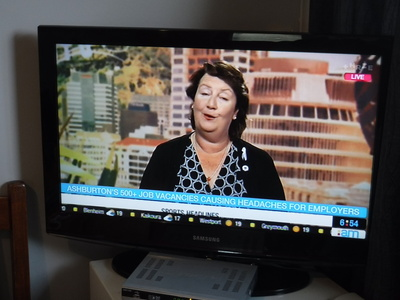
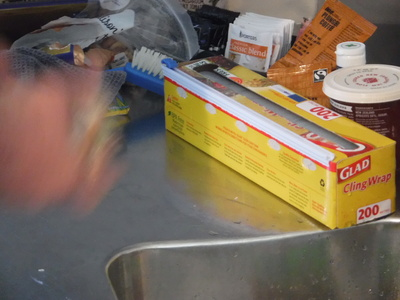
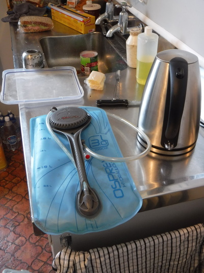
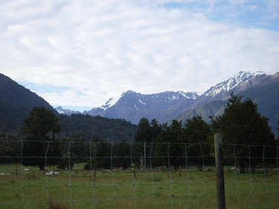
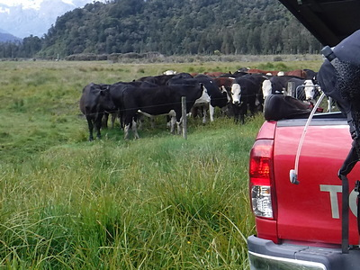
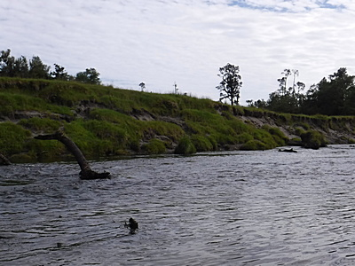
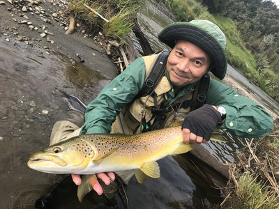
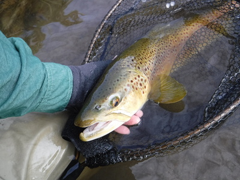

釣行日誌 ＮＺ編 「一期一会の旅：A Sentimental Journey」
見覚えのある懐かしの川へ
11-23(FRI)-1
今朝は６時起床。大きすぎる箱のシリアルを買ってしまったので、大きめのボウルに入れ、レンジで温めたミルクをかけてせっせと食べる。なんと1.2kg入り！

テレビからは朝のニュース番組が流れてくる。一昨日以来のディーンのマシンガントークと相まって、英語のリスニング能力が遅々とではあるがなんとなく回復してきた。

今朝もディーンがお昼のサンドイッチを作る。出来上がってからラップするのは、日本の一般的な「サランラップ」などよりも太さが３倍ほどもあり、幅も広い。便利だなと思ったのは、箱の上部にスライド式のカッターが付いていて、適量引き出してラップしてからつまみを右に滑らせるとラップがスパッとワンタッチで切れるのである。お土産に買って帰ろうかと思ったがかさばるのでヤメた。Cling Wrap という商品だった。

さらにディーンは、水分補給のためにパイプ状の飲み口の付いたウォーターコンテナを用意し、スポーツ飲料らしい粉末を溶かしている。これをバックパックに入れて背負えば、いちいちペットボトルや水筒を取り出さなくても移動中に飲むことが出来るとのこと。それにしても、３Lの容器はデカいなと感心したが、彼の巨躯で丸１日歩くとなればこのくらいは要るだろう。

準備をして車に乗り込み、今朝もパイロットのジェームズさんのお宅に寄って、ディーンが撮影機材を取りに来た。今日行く川はジェームズさんの牧場の中を流れているので、話は付いており、他の釣り人は来ないのでゆっくりでも間に合うそうだ。お宅のすぐ裏手にはサザンアルプスの峰々がそびえている。

いったん車で北へ戻り、フォックス氷河の町でトヨタに軽油を補給する。２人でコーヒー店に入り、ディーンに１杯おごってもらう。土産物を眺めていると、前回も買い込んだウエストランドの絵はがき各種多数を売っていたので、最終日にホキティカに帰る途中に寄ってもらうようディーンに頼んでおいた。
燃料も満タンになったので、再度ステートハイウェイ６号線を南へ下り、農道に入ってゲートを開け、牧場の中に進んで行く。昨日のような荒れた河原越えや浅瀬渡りは無く、平坦な農道をゲートを開閉しながら淡々と走り続ける。15分ほどで車停めに着き、釣り支度を始めると、牧場内の牛たちが無言でゾロゾロと僕らの周りに集結してきた。

ディーンが、
「驚かせなければ牛たちは大人しいもんだよ。」
と言った。時刻は９時半を回っていた。今日はディーンはバックパックに加え、重い三脚と中型ビデオカメラを担いで、野生動物の撮影を兼ねての釣行である。車から15分ほど農道を歩いて行くと広い河原に出た。両岸はやや切り立った砂質土の崖であり、渓相から見て、８年前に鰐部さんと３人でヘリで入った川の上流部らしかった。あちこちに流木、倒木が突き出したり沈んだりしており、鱒を掛けてから厄介なことになりそうな川だ。
タックルをセットし、ラインを通してリーダーを新しいのに交換し、ディーンが用意してくれたティペットを結ぶ。流れに入り、対岸へ向かってジャブジャブと渡り始めたディーンが、いきなり１尾発見した。澪筋がぶつかる倒木の上流側に定位していると言う。水深は浅そうだったが、今朝の空は曇りがちで光線の具合が悪く、やはり僕には何も見えない。

茶褐色で小型のビーズヘッドニンフを結んでから、だいぶ離れた場所を狙ってフォルスキャストしてみる。昨日よりもループの感じが良い。フライラインのテーパーデザインについてどうのこうの言える技量を僕が持っていないことは百も二百も承知なのだが、昨日使っていた Airflo Bandit Camo Tip WF6F は、カモフラージュされた色合いは申し分ないのだが、どうも先端のテーパー部分が太すぎて、ドタンと水面に落ちる感じがした。もちろんキャスティングが下手な証拠でもあるが。そこで今日は細身にデザインされた懐かしのコートランドスプリングクリークに替えたのだ。ヤーンのインジケーターは付けず、魚もフライも見えないのでガイドの声だけが頼りだ。
あの辺かな？見当でキャストしてニンフをドリフトさせてくると、
「ストライク！」
の大声。反射的に合わせると鱒が乗った。すぐ下手の流木の塊に走り込まれないよう、2Xのティペット強度を頼りにしてやや強引に左側に引き出し、さらに下流の障害物を２カ所クリアしてからそばにあった淀みに誘導。朝１番に見つけてくれた１尾目を１投目でキャッチできた！


釣行日誌ＮＺ編 目次へ
サイトマップ
ホームへ
お問い合わせ